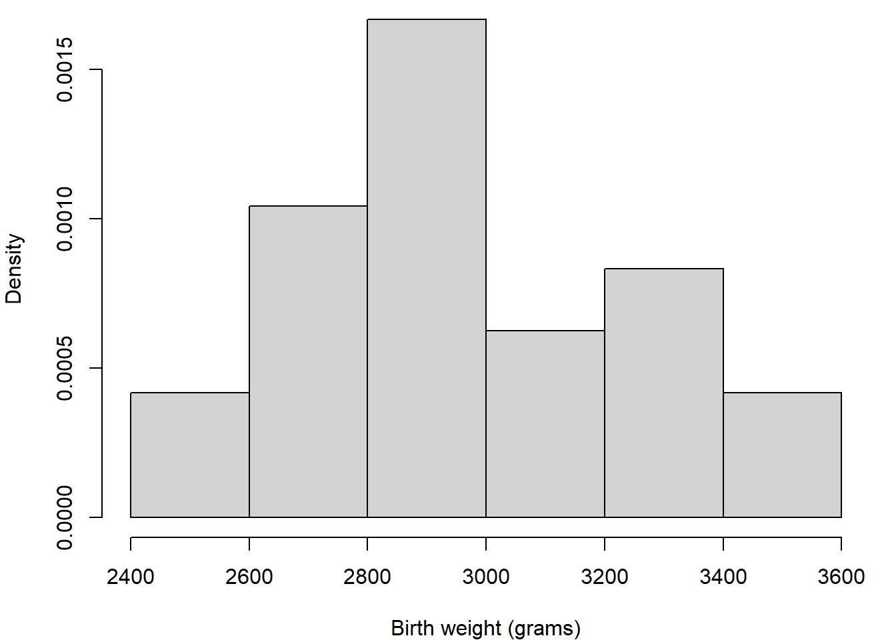
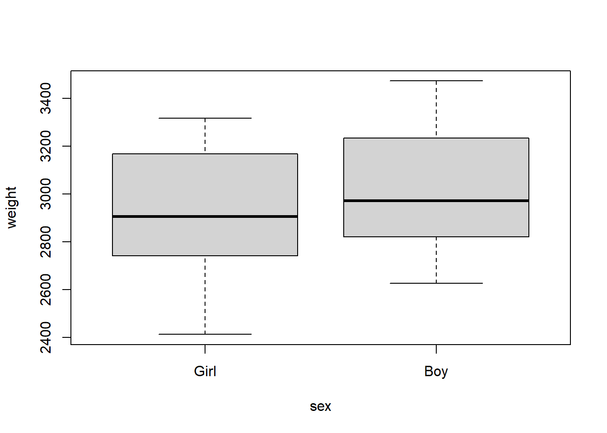
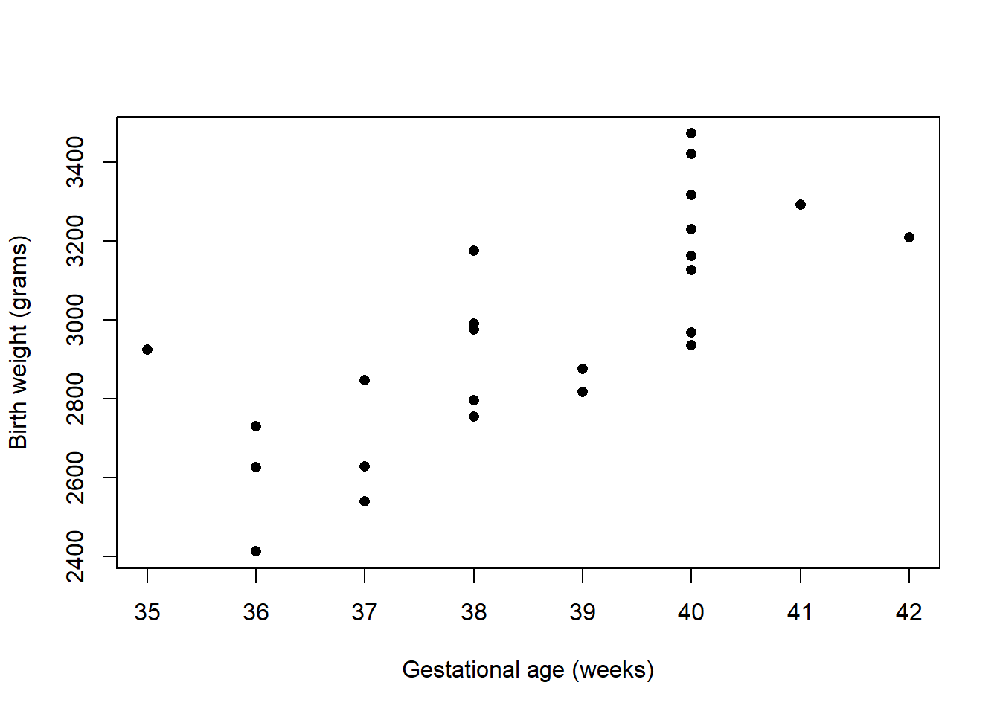
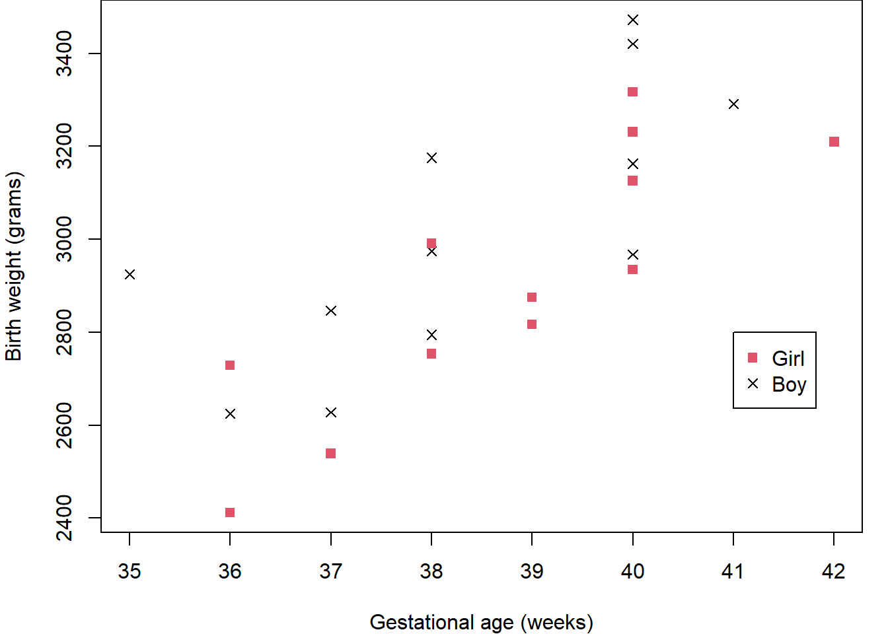
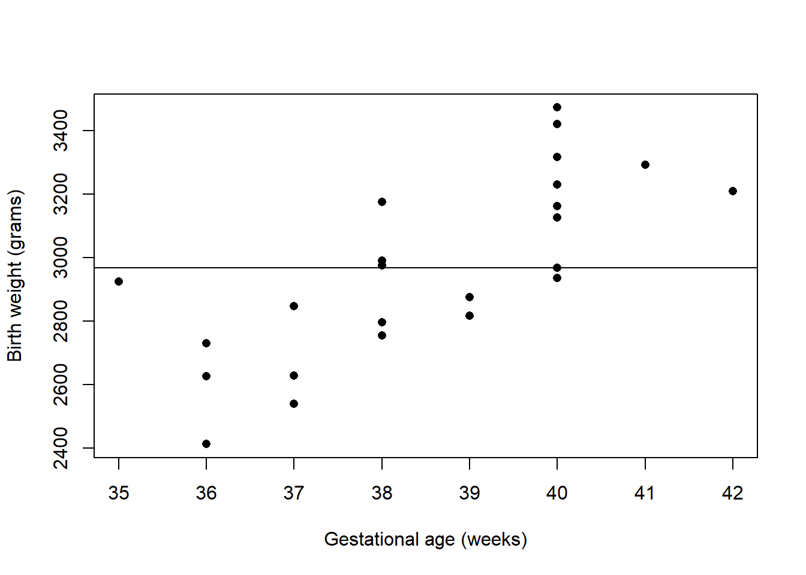
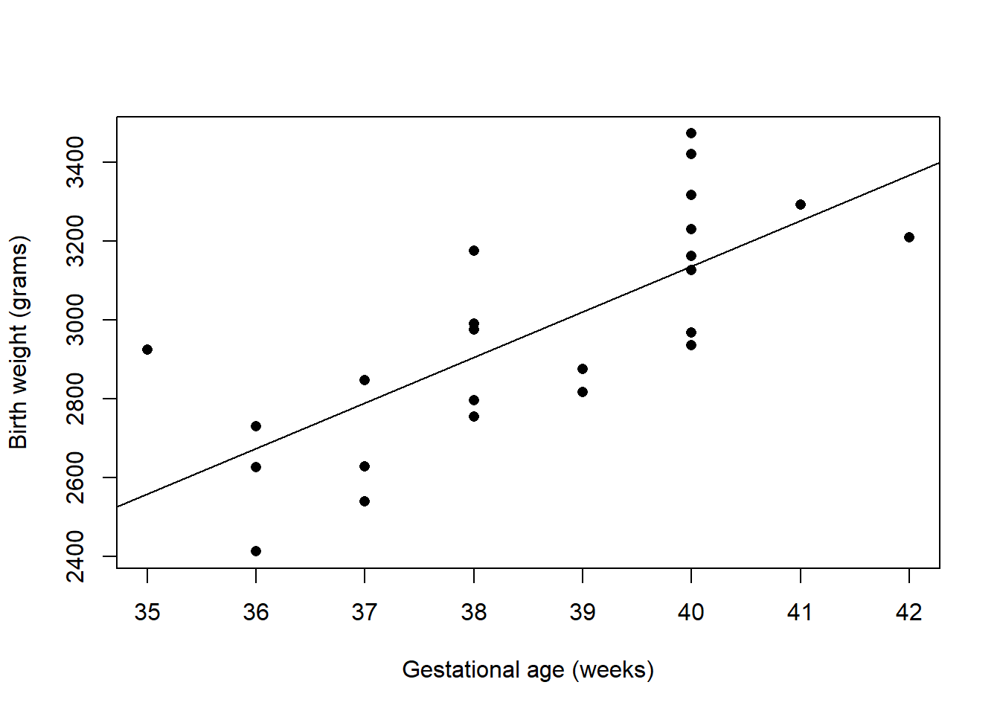
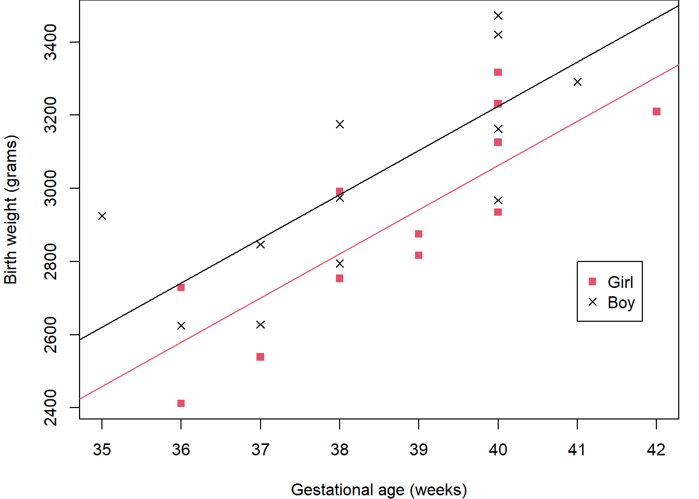
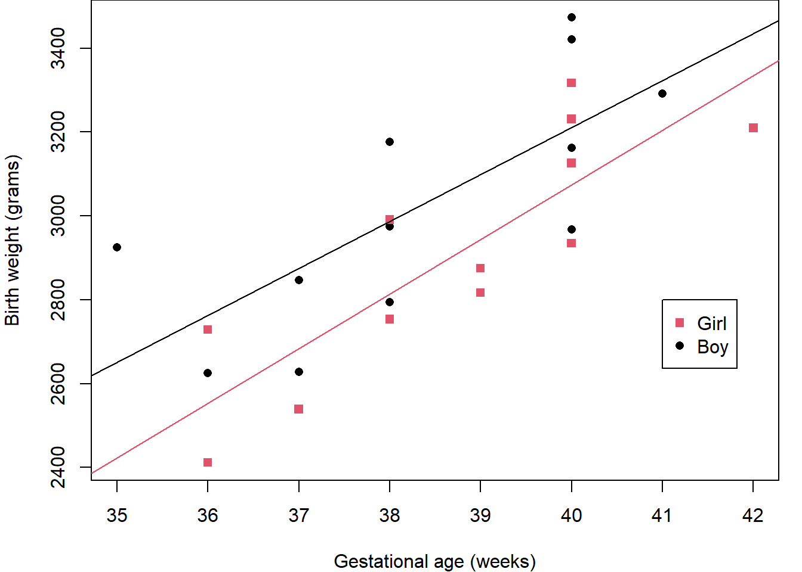
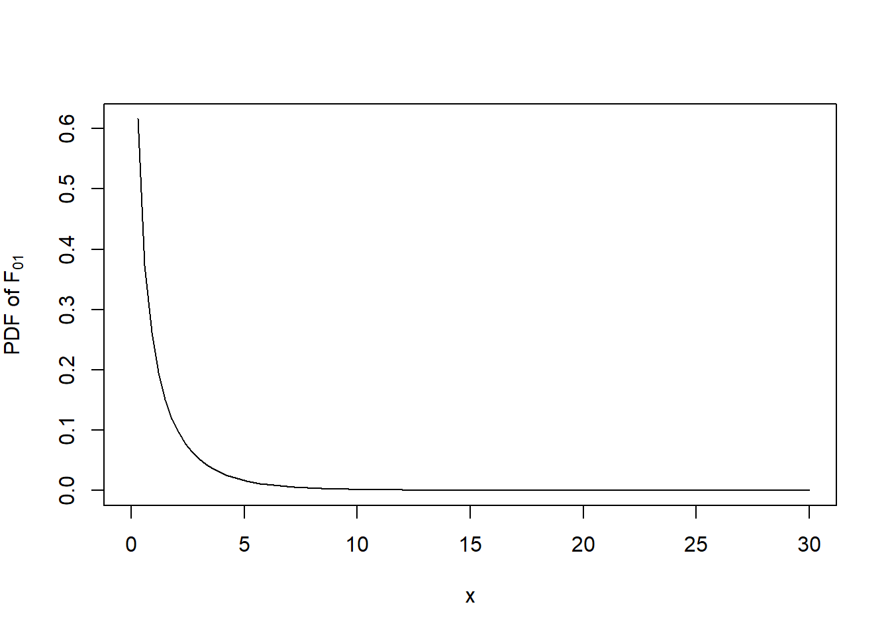

2 Essentials of Normal Linear Models
\[ \def\b#1{\mathbf{#1}} \]
2.1 Overview
In many fields of application, we might assume the response variable is normally distributed. For example: heights, weights, log prices, etc.
The data1 in Table 2.1 record the birth weights of 12 girls and 12 boys and their gestational ages (time from conception to birth).
Table 2.1: Gestational ages (in weeks) and birth weights (in grams) for 24 babies (12 girls and 12 boys).
| Gestational Age | Birth weight |
|---|---|
| 40 | 3317 |
| 36 | 2729 |
| 40 | 2935 |
| 37 | 2754 |
| 42 | 3210 |
| 39 | 2817 |
| 40 | 3126 |
| 37 | 2539 |
| 36 | 2412 |
| 38 | 2991 |
| 39 | 2875 |
| 40 | 3231 |
| Gestational Age | Birth weight |
|---|---|
| 40 | 2968 |
| 38 | 2795 |
| 40 | 3163 |
| 35 | 2925 |
| 36 | 2625 |
| 37 | 2847 |
| 41 | 3292 |
| 40 | 3473 |
| 37 | 2628 |
| 38 | 3176 |
| 40 | 3421 |
| 38 | 3975 |
A key question is, can we predict the birth weight of a baby born at a given gestational age using these data. For this we will need to make assumptions about the relationship between birth weight and gestational age, and any associated natural variation – that is we require a model.
First we should explore the data. Figure 2.1 (a) shows a histogram of the birth weights indicating a spread around modal group 2800-3000 grams; Figure 2.1 (b) indicates slightly higher birth weights for the boys than the girls; and Figure 2.1 (c) shows an increasing relationship between weight and age. Together, these suggest that gestational age and sex are likely to be important for predicting weight.
Code
birthweight = read.table("https://rgaykroyd.github.io/MATH3823/Datasets/birthwt-numeric.txt", header=T)
weight = birthweight$weight
age = birthweight$age
sex = birthweight$sex
hist(weight, breaks=6, probability = T, main = "",
xlab = "Birth weight (grams)")
boxplot(weight~sex, names=c("Girl", "Boy"))
plot(age, weight, pch=16,
xlab = "Gestational age (weeks)",
ylab = "Birth weight (grams)")


Before considering possible models, Figure 2.2 again shows the relationship between weight and age but this time with the points coloured according to the baby’s sex. This, perhaps, shows the boys to have generally higher weights across the age range than girls.
Code
birthweight = read.table("https://rgaykroyd.github.io/MATH3823/Datasets/birthwt-numeric.txt", header=T)
weight = birthweight$weight
age = birthweight$age
sex = birthweight$sex
plot(age, weight, col=2-sex, pch=15+sex,
xlab = "Gestational age (weeks)",
ylab = "Birth weight (grams)")
legend(41,2800, c("Girl","Boy"), col = c(2,1), pch=c(15,16))
Of course, there are very many possible models, but here we will consider the following:
| \(\texttt{Model 0}:\) | \(\texttt{Weight}=\alpha\) |
| \(\texttt{Model 1}:\) | \(\texttt{Weight}=\alpha + \beta.\texttt{Age}\) |
| \(\texttt{Model 2}:\) | \(\texttt{Weight}=\alpha + \beta.\texttt{Age}+\gamma.\texttt{Sex}\) |
| \(\texttt{Model 3}:\) | \(\texttt{Weight}=\alpha + \beta.\texttt{Age}+\gamma.\texttt{Sex} + \delta.\texttt{Age}.\texttt{Sex}\) |
In these models, \(\texttt{Weight}\) is called the response variable (sometimes called the dependent variable) and \(\texttt{Age}\) and \(\texttt{Sex}\) are called the covariates or explanatory variables (sometimes called the predictor or independent variables). Here, \(\texttt{Age}\) is a continuous variable whereas \(\texttt{Sex}\) is coded as a dummy variable taking the value 0 for girls and 1 for boys; it is an example of a factor, in this case with just two levels: Girl and Boy.
Note that \(\texttt{Model 0}\) is a special case of \(\texttt{Model 1}\) (consider the situation when \(\beta=0\)) and that \(\texttt{Model 1}\) is a special case of \(\texttt{Model 2}\) (consider the situation when \(\gamma=0\)) and finally that \(\texttt{Model 2}\) is a special case of \(\texttt{Model 3}\) (consider the situation when \(\delta=0\)) – such models are called nested.
In these models, \(\alpha\), \(\beta\), \(\gamma\) and \(\delta\) are model parameters. Parameter \(\alpha\) is called the intercept term; \(\beta\) is called the main effect of \(\texttt{Age}\); and is interpreted as the effect on birth weight per week of gestational age. Similarly, \(\gamma\) is the main effect of \(\texttt{Sex}\), interpreted as the effect on birth weight of being a boy (because girl is the baseline category).
Parameter \(\delta\) is called the interaction effect between \(\texttt{Age}\) and \(\texttt{Sex}\). Take care when interpreting an interaction effect. Here, it does not mean that age somehow affects sex, or vice-versa. It means that the effect of gestational age on birth weight depends on whether the baby is a boy or a girl.
These models can be fitted to the data using (Ordinary) Least Squares to produce the results presented in Figure 2.3.
Which model should we use?
Code
birthweight = read.table("https://rgaykroyd.github.io/MATH3823/Datasets/birthwt-numeric.txt", header=T)
weight = birthweight$weight
age = birthweight$age
sex = birthweight$sex
plot(age, weight, pch=16,
xlab = "Gestational age (weeks)",
ylab = "Birth weight (grams)")
abline(h=mean(weight))
plot(age, weight, pch=16,
xlab = "Gestational age (weeks)",
ylab = "Birth weight (grams)")
M1.fit = lm(weight~age)
abline(M1.fit$coefficients[1],M1.fit$coefficients[2])
plot(age, weight, pch=15+sex, col=2-sex,
xlab = "Gestational age (weeks)",
ylab = "Birth weight (grams)")
legend(41,2800, c("Girl","Boy"), col = c(2,1),pch=c(15,16))
M2.fit = lm(weight~age+sex)
abline(M2.fit$coefficients[1],M2.fit$coefficients[2], col=2)
abline(M2.fit$coefficients[1]+M2.fit$coefficients[3],M2.fit$coefficients[2], col=1)
plot(age, weight, pch=15+sex, col=2-sex,
xlab = "Gestational age (weeks)",
ylab = "Birth weight (grams)")
legend(41,2800, c("Girl","Boy"), col = c(2,1), pch=c(15,16))
M3.fit = lm(weight~age+sex+age*sex)
abline(M3.fit$coefficients[1],M3.fit$coefficients[2], col=2)
abline(M3.fit$coefficients[1]+M3.fit$coefficients[3],M3.fit$coefficients[2]+M3.fit$coefficients[4], col=1)



We know from previous modules that statistical tests can be used to check the importance of regression coefficients and model parameters, but it is also important to use the graphical results, as in Figure 2.3, to guide us.
\(\texttt{Model 0}\) says that there is no change in birth weight with gestational age which means that we would use the average birth weight as the prediction whatever the gestational age – this makes no sense. As we can easily see from the scatter plot of the data, the fitted line in this case is clearly inappropriate.
\(\texttt{Model 1}\) does not take into account whether the baby is a girl or a boy, but does model the relationship between birth weight and gestational age. This does seem to provide a good fit and might be adequate for many purposes. Recall from Figure 2.1 (b) and Figure 2.2, however, that for a given gestational age the boys seem to have a higher birth weight than the girls.
\(\texttt{Model 2}\) does take the sex of the baby into account by allowing separate intercepts in the fitted lines – this means that the lines are parallel. By eye, there is a clear difference between these two lines but it might not be important.
\(\texttt{Model 3}\) allows for separate slopes as well as intercepts. There is a slight difference in the slopes, with the birth weight of the girls gradually catching-up as the gestational age increases. It is difficult to see, however, if this will be a general pattern or if it is only true for this data set – especially given the relatively small sample size.
Here, it is not clear by eye which of the fitted models will be the best and hence we should use a statistical test to help. In particular, we can choose between the models using F-tests.
Let \(y_i\) denote the value of the dependent variable \(\texttt{Weight}\) for individual \(i=1,\dots,n\), and let the four models be indexed by \(k=0,1,2,3\).
Let \(R_k\) denote the residual sum of squares (RSS) for Model \(k:\)
\[ R_k = \sum_{i=1}^n (y_i - \hat{\mu}_{ki})^2, \tag{2.1}\]
where \(\hat{\mu}_{ki}\) is the fitted value for individual \(i\) under \(\texttt{Model}\) \(k\). Let \(r_k\) denote the corresponding residual degrees of freedom for \(\texttt{Model}\) \(k\) (the number of observations minus the number of model parameters).
Consider the following hypotheses: \[ H_0: \texttt{Model } 0 \text{ is true}; \hspace{5mm} H_1: \texttt{Model } 1 \text{ is true}. \] Under the null hypothesis \(H_0\), the difference between \(R_0\) and \(R_1\) will be purely random, so the between-models mean-square \((R_0 - R_1)/(r_0 - r_1)\) should be comparable to the residual mean-square \(R_1/r_1\). Thus our test statistic for comparing \(\texttt{Model } 1\) to the simpler \(\texttt{Model } 0\) is:
\[ F_{01} = \frac{(R_0 - R_1)/(r_0 - r_1)}{R_1/r_1}. \tag{2.2}\]
It can be shown that, under the null hypothesis \(H_0\), the statistic \(F_{01}\) will have an \(F\)-distribution on \(r_0 - r_1\) and \(r_1\) degrees of freedom, which we write: \(F_{r_0-r_1, r_1}\). Under the alternative hypothesis \(H_1\), the difference \(R_0-R_1\) will tend to be larger than expected under \(H_0\), and so the observed value \(F_{01}\) will probably lie in the upper tail of the \(F_{r_0-r_1, r_1}\) distribution.
Returning to the birth weight data, we obtain the following output from \(\b{R}\) when we fit \(\texttt{Model } 1\):
Code
# read the data from file into a dataframe called ’birthweight’
birthweight = read.table("https://rgaykroyd.github.io/MATH3823/Datasets/birthwt.txt", header=T)
# fit Model 1
fit1 = lm(weight ~ age, data=birthweight)
# print the parameter estimates from Model 1
coefficients(fit1)(Intercept) age
-1484.9846 115.5283 Code
# perform an analysis of variance of Model 1
anova(fit1)Analysis of Variance Table
Response: weight
Df Sum Sq Mean Sq F value Pr(>F)
age 1 1013799 1013799 27.33 3.04e-05 ***
Residuals 22 816074 37094
---
Signif. codes: 0 '***' 0.001 '**' 0.01 '*' 0.05 '.' 0.1 ' ' 1Thus we have parameter estimates: \(\hat\alpha = -1484.98\) and \(\hat\beta = 115.5\). The Analysis of Variance (ANOVA) table gives: \(R_0-R_1 = 1013799\) with \(r_0-r_1 = 1\) and \(R_1 = 816074\) with \(r_1 = 22\).
If we wanted \(R_0\) and \(r_0\) then we can either fit \(\texttt{Model 0}\) or get them by subtraction.
The \(F_{01}\) statistic, Equation 2.2, is then
\[ F_{01} = \frac{113799/1}{816074/22} = 27.33, \] which can be read directly from the ANOVA table in the column headed ‘F value’.
Is \(F_{01} = 27.33\) in the upper tail of the \(F_{1,22}\) distribution? (See Figure 2.4 and note that 27.33 is very far to the right.) The final column of the ANOVA table tells us that the probability of observing \(F_{01} > 27.33\) is only \(3.04\times10^5\) – this is called a p-value. The *** beside this p-value highlights that its value lies between 0 and 0.001. This indicates that we should reject \(H_0\) in favour of \(H_1\) – there is very strong evidence for the more complicated model. Thus we would conclude that the effect of gestational age is statistically significant in these data.
Code
curve(df(x,1,22), 0,30,
ylab=expression("PDF of "*"F"[0][1]))
Next, consider the following hypotheses:
\[ H_0: \texttt{Model } 1 \text{ is true}; \hspace{5mm} H_1: \texttt{Model } 2 \text{ is true}. \]
Under the null hypothesis \(H_0\), the difference between \(R_1\) and \(R_2\) will be purely random, so the between-models mean-square \((R_1 - R_2)/(r_1 - r_2)\) should be comparable to the residual mean-square \(R_2/r_2\). Thus our test statistic for comparing \(\texttt{Model } 2\) to the simpler \(\texttt{Model } 1\) is:
\[ F_{12} = \frac{(R_1 - R_2)/(r_1 - r_2)}{R_2/r_2}. \tag{2.3}\]
Under the null hypothesis \(H_0\), the statistic \(F_{12}\) will have an \(F\)-distribution on \(r_1 - r_2\) and \(r_2\) degrees of freedom, which we write: \(F_{r_1-r_2, r_2}\). Under the alternative hypothesis \(H_1\), the difference \(R_1-R_2\) will tend to be larger than expected under \(H_0\), and so the observed value \(F_{12}\) will probably lie in the upper tail of the \(F_{r_1-r_2, r_2}\) distribution.
Returning to the birth weight data, we obtain the following output from \(\b{R}\) (where \(\texttt{sexM}\) denotes Boy):
Code
# fit Model 2
fit2 = lm(weight ~ age + sex, data=birthweight)
# print the parameter estimates from Model 2
coefficients(fit2)(Intercept) age sexM
-1773.3218 120.8943 163.0393 Code
# perform an analysis of variance on the fitted model
anova(fit2)Analysis of Variance Table
Response: weight
Df Sum Sq Mean Sq F value Pr(>F)
age 1 1013799 1013799 32.3174 1.213e-05 ***
sex 1 157304 157304 5.0145 0.03609 *
Residuals 21 658771 31370
---
Signif. codes: 0 '***' 0.001 '**' 0.01 '*' 0.05 '.' 0.1 ' ' 1Thus we have parameter estimates: \(\hat \alpha = -1773.3\), \(\hat\beta = 120.9\) and \(\hat\gamma = 163.0\), the latter being the effect of being a boy compared to the baseline category of being a girl.
The Analysis of Variance (ANOVA) table gives: \(R_1-R_2 = 157304\) with \(r_1-r_2=1\), and \(R_2=658771\) with \(r_2=21\). The \(F_{12}\) statistic, Equation 2.3, is then
\[ F_{12} = \frac{157304/1}{658771/21} = 5.0145, \]
which can be read directly from the ANOVA table in the column headed ‘F value’. Is \(F_{12} = 5.01\) in the upper tail of the \(F_{1,21}\) distribution?
The final column of the ANOVA table tells us that the probability of observing \(F_{12} > 5.01\) is only \(0.03609\) – this is called a p-value. The * beside this p-value highlights that its value lies between 0.01 and 0.05. This indicates that we should reject \(H_0\) in favour of \(H_1\) – there is evidence for the more complicated model. Thus we would conclude that the effect of the sex of the baby, after controlling for gestational age, is statistically significant in these data.
To complete the analysis, we should now compare \(\texttt{Model }2\) with \(\texttt{Model }3\) – see Exercises.
2.2 Types of normal linear model
Here we consider how normal linear models can be set up for different types of explanatory variable. The dependent variable \(y\) is modelled as a linear combination of \(p\) explanatory variables \(\b{x} =(x_1, x_2,\ldots, x_p)\) plus a random error \(\epsilon \sim N(0, \sigma^2)\), where ‘~’ means ‘is distributed as’. Several models are of this kind, depending on the number and type of explanatory variables. Table 2.2 lists some types of normal linear models with their explanatory variable types.
| \(p\) | Explanatory variables | Model |
| 1 | Quantitative | Simple linear regression \(y=\alpha+\beta x+\epsilon\) |
| >1 | Quantitative | Multiple linear regression\(y=\alpha+\sum_{i=1}^p\beta_i x_i+\epsilon\) |
| 1 | Dichotomous (\(x=1\) or \(2\)) | Two-sample t-test \(y=\alpha+\delta ~ I(x=2)+\epsilon\) |
| 1 | Polytomous, \(k\) levels \((x=1,\ldots,k)\) | One-way ANOVA\(y=\alpha+\sum_{j=1}^k \delta_j \ I(x=j)+\epsilon\) |
| >1 | Qualitative | \(p\)-way ANOVA |
For the two-sample t-test model2, observations in the two groups have means \(\alpha+\beta_1\) and \(\alpha + \beta_2\) . Notice, however, that we have three parameters with only two group sample means and hence parameter estimation is not possible. To avoid this identification problem, we either impose a ‘corner’ constraint: \(\beta_1=0\) and then \(\beta_2\) represents the difference in the Group 2 mean relative to a baseline of Group \(1\). Alternatively, we may impose a ‘sum-to-zero’ constraint: \(\beta_1+ \beta_2 =0\), the values \(\beta_1=-\beta_2\) then give differences in the groups means relative to the overall mean. Table 2.3 shows the effect of the parameter constraint on the group means.
| Constraint | Group 1 mean | Group 2 mean |
|---|---|---|
| \(\beta_1=0\) | \(\alpha\) | \(\alpha+\beta_2\) |
| \(\beta_1+\beta_2=0\) | \(\alpha-\beta_2\) | \(\alpha+\beta_2\) |
For the general one-way ANOVA model with \(k\) groups, observations in Group \(j\) have mean \(\alpha + \delta_j\) , for \(j =1, \ldots, k\) – that leads to \(k + 1\) parameters describing \(k\) group means. Again we can impose the ‘corner’ constraint: \(\delta_1 = 0\) and then \(\delta_j\) represents the difference in means between Group \(j\) and the baseline Group \(1\). Alternatively, we may impose a ‘sum-to-zero’ constraint:\(\sum_{j=1}^k \delta_j =0\) and again \((\delta_1, \delta_2,\dots,\delta_k)\) then represents an individual group effect relative to the overall data mean.
2.3 Matrix representation of linear models
All of the models in Table Table 2.2 can be fitted by least squares (OLS). To describe this, a matrix formulation will be most convenient:
\[ \mathbf{Y} = X\boldsymbol{\beta}+\boldsymbol{\epsilon} \tag{2.4}\]
where
- \(\mathbf{Y}\) is an \(n\times 1\) vector of observed response values with \(n\) being the number of observations.
- \(X\) is an \(n\times p\) design matrix, to be discussed below.
- \(\boldsymbol{\beta}\) is a \(p\times 1\) vector of parameters or coefficients to be estimated.
- \(\boldsymbol{\epsilon}\) is an \(n\times 1\) vector of independent and identically distributed (IID) random variables, which here \(\epsilon \sim N(0, \sigma^2)\) and is called the “error” term.
2.4 Construction of the design matrix
Creating the design matrix is a key part of the modelling as it describes the important structure of investigation or experiment. The design matrix can be constructed by the following process.
Begin with an \(X\) containing only one column: a vector of ones for the overall mean or intercept term (the \(\alpha\) in Table 2.2).
For each explanatory variable \(x_j\), do the following:
- If a variable \(x_j\) is quantitative, add a column to \(X\) containing the values of \(x_j.\)
- If \(x_j\) is qualitative with \(k\) levels, add \(k\) “dummy” columns to \(X\), taking values 0 and 1, where a 1 in the \(\ell\)th dummy column identifies that the corresponding observation is at level \(\ell\) of factor \(x_j\) . For example, suppose we have a factor \(\mathbf{x}_j = (M, M, F, M, F)\) representing the sex of \(n = 5\) individuals. This information can be coded into two dummy columns of \(X\):
\[ \begin{matrix} \begin{matrix} F & M \end{matrix}\\ \begin{bmatrix} 0 & 1 \\ 0 & 1 \\ 1 & 0 \\ 0 & 1 \\ 1 & 0 \end{bmatrix} \end{matrix} \]
When qualitative variables are present, \(X\) will be singular – that is, there will be linear dependencies between the columns of \(X\). For example, the sum of the two columns above is a vector of ones, the same as the intercept column. We resolve this identification problem by deleting some columns of \(X\). This is equivalent to applying the corner constraint \(\delta_1 = 0\) in the one-way ANOVA.
In the above example, after removing a column, we get:
\[ \mathbf{X}=\begin{bmatrix} 1 & 1 \\ 1 & 1 \\ 1 & 0 \\ 1 & 1 \\ 1 & 0 \end{bmatrix}. \]Each column of \(X\) represents either a quantitative variable, or a level of a qualitative variable. We will use \(i = 1, \ldots, n\) to label the observations (rows of \(X\)) and \(j = 1, \ldots, p\) to label the columns of \(X\).
2.4.1 Example: Simple linear regression
Consider the simple linear regression model \(y=\alpha+\beta x+\epsilon\) with \(\epsilon \sim N(0, \sigma^2)\). Given data on \(n\) pairs \((x_i, y_i), i = 1, \ldots, n\), we write this as
\[ y_i = \alpha+\beta x_i+\epsilon_i, \quad \text{for } i=1,2,\dots,n, \tag{2.5}\]
where the \(\epsilon_i\) are IID \(N(0,\sigma^2)\). In matrix form, this becomes
\[ \mathbf{Y}=X\boldsymbol{\beta}+\boldsymbol{\epsilon} \tag{2.6}\] with \[ \mathbf{Y}=\begin{bmatrix} y_1\\ \vdots\\ y_n \end{bmatrix}, % \hspace{5mm} % X=\begin{bmatrix} 1 & x_1\\ \vdots & \vdots\\ 1 & x_n \end{bmatrix}, % \hspace{5mm} % \boldsymbol{\beta}= \begin{bmatrix} \beta_1\\ \beta_2 \end{bmatrix} = \begin{bmatrix} \alpha\\ \beta \end{bmatrix}, % \hspace{5mm} % \boldsymbol{\epsilon}= \begin{bmatrix} \epsilon_1\\ \vdots\\ \epsilon_n \end{bmatrix}. \] The \(i\)th row of Equation 2.6 has the same meaning as Equation 2.5: \[ y_i = 1\times \beta_1 + x_i\times \beta_2 +\epsilon_i = \alpha+\beta x_i +\epsilon_i, \hspace{2mm} \text{for } i=1,2,\dots,n. \]
2.4.2 Example: One-way ANOVA
For one-way ANOVA with \(k\) levels, the model is \[ y_i =\alpha+\sum_{j=1}^k \delta_j \ I(x_i=j)+\epsilon_i, \quad \text{for } i=1, 2, \dots,n, \] where \(x_i\) denotes the group level of individual \(i\). So if \(y_i\) is from the \(j\)th group then \(y_i \sim N(\alpha+\delta_j, \sigma^2)\). Here \(\alpha\) is the intercept and the \((\delta_1, \delta_2, \dots,\delta_k)\) represent the “main effects”.
We can store the information about the levels of \(g\) in a dummy matrix \(X^* = (x^*_{ij})\) where
\[ x^*_{ij} = \left\{ \begin{array}{cl} 1, & g_i=j,\\ 0, & \text{otherwise.} \end{array} \right. \]
Then set \(X = [1, X^*]\), where \(1\) is an \(n\)-vector of \(1\)’s. For the male–female example at (1.12), we have \(n = 5\) and a sex factor:
\[ g=\begin{bmatrix}1\\ 1 \\2\\1\\2\end{bmatrix}, % \hspace{5mm} % X=\begin{bmatrix} 1 & 1 & 0\\ 1&1& 0 \\ 1& 0 & 1\\ 1& 1 & 0 \\ 1& 0 & 1 \end{bmatrix}, % \hspace{5mm} % \beta=\begin{bmatrix}\beta_1\\\beta_2\\\beta_3\end{bmatrix} =\begin{bmatrix}\alpha\\\delta_1 \\\delta_2\end{bmatrix}. \]
Then the \(i\)th row of \(X\) becomes \(\beta_1 + \beta_2 = \alpha + \delta_1\) if \(g_i = 1\) and \(\beta_1 + \beta_3 = \alpha + \delta_2\) if \(g_i\) = 2. That is, the \(i\)th row of \(X\) is
\[ \alpha+\sum_{j=1}^2 \delta_j I(g_i=j) \] so this model can be written \(Y=X\beta+\epsilon\). Here, \(X\) is singular: its last two columns added together equal its first column. Statistically, the problem is that we are trying to estimate two means (the mean response for Boys and the mean response for Girls) with three parameters (\(\alpha\), \(\delta_2\) and \(\delta_2\)).
In practice, we often resolve this aliasing or identification problem by setting one of the parameters to be zero, that is \(\delta_1 = 0\), which corresponds to deleting the second column of \(X\)).
2.5 Model shorthand notation
In R, a qualitative (categorical) variable is called a factor, and its categories are called levels. For example, variable \(\texttt{Sex}\) in the birth weight data (above) has levels coded “M” for ‘Boy’ and “F” for ‘Girl’. It may not be obvious to R whether a variable is quantitative or qualitative. For example, a qualitative variable called \(\texttt{Grade}\) might have categories 1, 2 and 3. If was included in a model, R would treat it as quantitative unless we declare it to be a factor, which we can do with the command:
\(\texttt{grade = as.factor(grade)}\)
A convenient model-specification notation has been developed from which the design matrix \(X\) can be constructed. Below, \(E, F, \ldots\) denote generic quantitative (continuous) or qualitative (categorical) variables. Terms in this notation may take the following forms:
\(1\) : a column of 1’s to accommodate an intercept term (the \(\alpha\)’s of Table 2.2 ). This is included in the model by default.
\(E\) : variable \(E\) is included in the model. The design matrix includes \(k_E\) columns for \(E\). If \(E\) is quantitative, \(k_E = 1\). If E is qualitative, \(k_E\) is the number of levels of \(E\) minus 1.
\(E +F\) : both \(E\) and \(F\) are included the model. The design matrix includes \(k_E +k_F\) columns accordingly.
\(E : F\) (sometimes \(E \cdot F\)) : the model includes an interaction between \(E\) and \(F\); each column that would be included for \(E\) is multiplied by each column for \(F\) in turn. The design matrix includes \(k_E \times k_F\) columns accordingly.
\(E * F\) : shorthand for \(1 + E + F + E : F\): useful for crossed models where \(E\) and \(F\) are different factors. For example, \(E\) labels age groups; \(F\) labels medical conditions.
\(E/F\) : shorthand for \(1 + E + E : F\): useful for nested models where \(F\) is a factor whose levels have meaning only within levels of factor \(E\). For example, \(E\) labels different hospitals; \(F\) labels wards within hospitals.
\(\text{poly}(E; \ell)\) : shorthand for an orthogonal polynomial, wherein \(x\) contains a set of mutually orthogonal columns containing polynomials in \(E\) of increasing order, from order \(1\) through order \(\ell\).
\(-E\) : shorthand for removing a term from the model; for example \(E * F -E\) is short for \(1 + F + E : F\).
\(I()\) : shorthand for an arithmetical expression (not to be confused with the indicator function defined above). For example, \(I(E + F)\) denotes a new quantitative variable constructed by adding together quantitative variables \(E\) and \(F\). This would cause an error if either \(E\) or \(F\) has been declared as a factor. What would happen in this example if we omitted the \(I(\cdot)\) notation?
The notation uses “~” as shorthand for “is modelled by” or “is regressed on”. For example,
Weight is regressed on age-group and sex with no interaction between them: \[ \texttt{Weight} \sim \texttt{Age} + \texttt{Sex} \] as for the birthweight data in Figure 1.2c.
Well being is regressed on age-group and income-group, where income is thought to affect wellbeing differentially by age: \[ \texttt{Wellbeing} \sim \texttt{Age} * \texttt{Income} \]
Class of degree is regressed on school of the university and on degree subject within the school: \[ \texttt{DegreeClass} \sim \texttt{School/Subject} \]
Yield of wheat is regressed on seed-variety and annual rainfall: \[ \texttt{Yield} \sim \texttt{Variety} + \texttt{poly}(\texttt{Rainfall}, 2) \]
Profit is regressed on amount invested: \[ \texttt{Profit}\sim \texttt{Investment}- 1 \] (no intercept term, that is a regression through the origin).
2.6 Exercises
Please note that these questions are currently unchecked. I aim to look at them very soon but a apologize is anything is incomplete or there are errors.
2.1. An extra model which could have been considered for the Birth weight data example would be one that says that \(\texttt{Weight}\) is different for girls and boys, but does not depend on gestational age.
Write down the equation corresponding to this model. Then, load the birth weight data into RStudio and fit the model. How are the fitted model parameters related to the overall birth weight mean and the mean birth weights of the girls and boys? Is this a good fit to the data? Is Sex statistically significant?
2.2. In an experiment to investigate Ohm’s Law, \(V=IR\) where \(V\) is Voltage, I is current and \(R\) is resistance of the material, the following data3 were recorded:
| Voltage (Volts) | 4 | 8 | 10 | 12 | 14 | 18 | 20 | 24 |
| Current (mAmps) | 11 | 24 | 30 | 36 | 40 | 53 | 58.5 | 70 |
Does this data support Ohm’s Law? What is the resistance of the material used?
2.3 In an investigation4 into the effect of eating on pulse rate, 6 men and 6 women were tested before and after a meal, with the following results:
| Men | before | 105 | 79 | 79 | 103 | 87 | 97 |
| after | 109 | 87 | 86 | 109 | 100 | 101 | |
| Women | before | 74 | 73 | 82 | 78 | 86 | 77 |
| after | 82 | 80 | 90 | 90 | 93 | 81 |
Suggest a suitable model for this situation and write down the corresponding design matrix. Calculate the parameter estimates using the matrix regression estimation equation.
Perform an appropriate analysis in R to find out if there is evidence to suggest that the change in pulse rate due to a meal is the same for men and women.
2.4 A laboratory experiment5 was performed into the effect of seasonal floods on the growth of barley seedlings in a incubator, as measured by their height in mm. Three types of barley seed (Goldmarker, Midas, Igri) were used with two watering condition (Normal and Waterlogged). Further, each combination was repeated four times on different shelves in the laboratory incubator (Top, Second, Third and Bottom shelf). The data are available in the file barley.csv
Suggest a suitable model for this situation. Identify the response and explanatory variables and list the levels for any qualitative variables. Write down the design matrix for each model you consider.
Perform appropriate analyses to test if each of the following are important: (a) watering condition, (b) type of barley seed, and (c) shelf position.
In the analysis, do not include any interactions involving shelf position. If you find a significant interaction between watering condition and type of barley seed, carefully interpret the parameter estimates.